Note
Click here to download the full example code
Example of sensitivity analyses on the wing weight model¶
This example is a brief overview of the use of the most usual sensitivity analysis techniques and how to call them:
PCC: Partial Correlation Coefficients
PRCC: Partial Rank Correlation Coefficients
SRC: Standard Regression Coefficients
SRRC: Standard Rank Regression Coefficients
Pearson coefficients
Spearman coefficients
Taylor expansion importance factors
Sobol’ indices
HSIC : Hilbert-Schmidt Independence Criterion
We present the methods on the WingWeight function and use the same notations.
Definition of the model¶
We load the model from the usecases module.
import openturns as ot
import openturns.viewer as otv
from openturns.usecases.wingweight_function import WingWeightModel
from matplotlib import pylab as plt
import numpy as np
ot.Log.Show(ot.Log.NONE)
m = WingWeightModel()
Cross cuts of the function¶
Let’s have a look on 2D cross cuts of the wing weight function. For each 2D cross cut, the other variables are fixed to the input distribution mean values. This graph allows to have a first idea of the variations of the function in pair of dimensions. The colors of each contour plot are comparable. The number of contour levels are related to the amount of variation of the function in the corresponding coordinates.
fig = plt.figure(figsize=(12, 12))
lowerBound = m.distributionX.getRange().getLowerBound()
upperBound = m.distributionX.getRange().getUpperBound()
# Definition of number of meshes in x and y axes for the 2D cross cut plots
nX = 20
nY = 20
for i in range(m.dim):
for j in range(i):
crossCutIndices = []
crossCutReferencePoint = []
for k in range(m.dim):
if k != i and k != j:
crossCutIndices.append(k)
# Definition of the reference point
crossCutReferencePoint.append(m.distributionX.getMean()[k])
# Definition of 2D cross cut function
crossCutFunction = ot.ParametricFunction(
m.model, crossCutIndices, crossCutReferencePoint)
crossCutLowerBound = [lowerBound[j], lowerBound[i]]
crossCutUpperBound = [upperBound[j], upperBound[i]]
# Definition of the mesh
inputData = ot.Box([nX, nY]).generate()
inputData *= (ot.Point(crossCutUpperBound)-ot.Point(crossCutLowerBound))
inputData += ot.Point(crossCutLowerBound)
meshX = np.array(inputData)[:,0].reshape(nX+2,nY+2)
meshY = np.array(inputData)[:,1].reshape(nX+2,nY+2)
data = crossCutFunction(inputData)
meshZ = np.array(data).reshape(nX+2,nY+2)
levels = [(150 + 3*i) for i in range(101)]
# Creation of the contour
index = 1 + i * m.dim + j
ax = fig.add_subplot(m.dim, m.dim, index)
ax.contour(meshX, meshY,meshZ,levels,cmap='hsv')
ax.set_xticks([])
ax.set_yticks([])
# Creation of axes title
if j==0:
ax.set_ylabel(m.distributionX.getDescription()[i])
if i ==9:
ax.set_xlabel(m.distributionX.getDescription()[j])
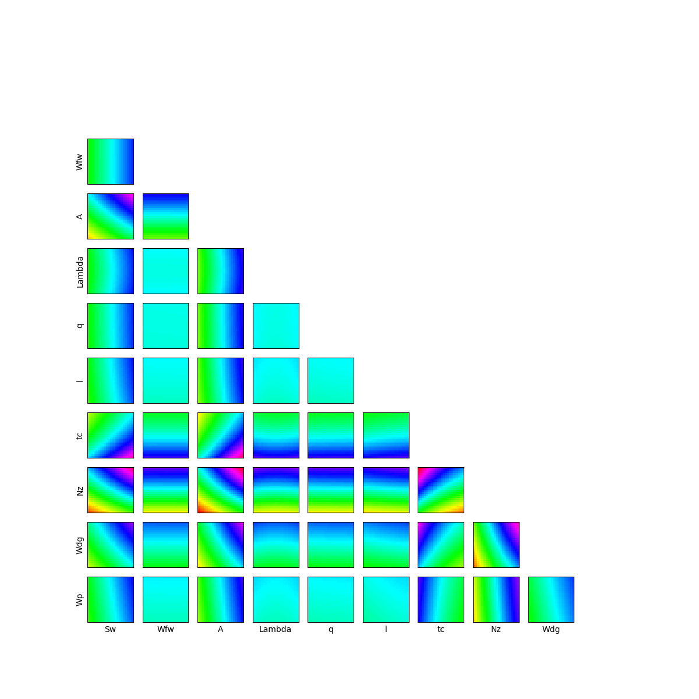
We can see that the variables seem to be influent on the wing weight whereas do not have influence on the function.
Data generation¶
We create the input and output data for the estimation of the different sensitivity coefficients and we get the input variables description:
inputNames = m.distributionX.getDescription()
size = 500
inputDesign = m.distributionX.getSample(size)
outputDesign = m.model(inputDesign)
Let’s estimate the PCC, PRCC, SRC, SRRC, Pearson and Spearman coefficients, display and analyze them.
We create a CorrelationAnalysis model.
corr_analysis = ot.CorrelationAnalysis(inputDesign, outputDesign)
PCC coefficients¶
We compute here PCC coefficients using the CorrelationAnalysis.
pcc_indices = corr_analysis.computePCC()
print(pcc_indices)
[0.940186,0.0882968,0.968989,0.0101513,0.115705,0.315289,-0.947166,0.981847,0.917402,0.44622]#10
graph = ot.SobolIndicesAlgorithm.DrawCorrelationCoefficients(
pcc_indices, inputNames, "PCC coefficients - Wing weight")
view = otv.View(graph)
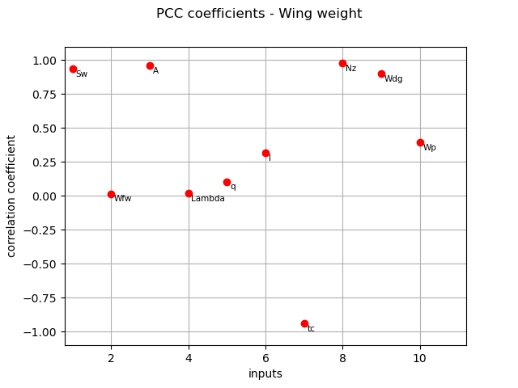
PRCC coefficients¶
We compute here PRCC coefficients using the CorrelationAnalysis.
prcc_indices = corr_analysis.computePRCC()
print(prcc_indices)
[0.8486,0.0649984,0.913677,-0.0206522,0.0858264,0.179864,-0.862092,0.949614,0.816437,0.340957]#10
graph = ot.SobolIndicesAlgorithm.DrawCorrelationCoefficients(
prcc_indices, inputNames, "PRCC coefficients - Wing weight")
view = otv.View(graph)
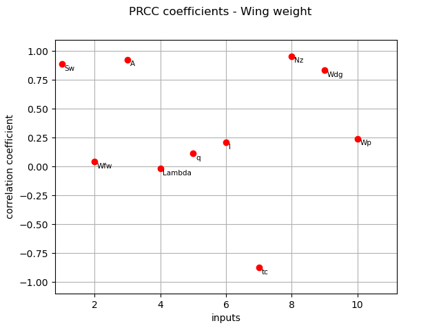
SRC coefficients¶
We compute here SRC coefficients using the CorrelationAnalysis.
src_indices = corr_analysis.computeSRC()
print(src_indices)
[0.368479,0.0117622,0.519118,0.00135185,0.0153738,0.043904,-0.391804,0.692999,0.303627,0.0659533]#10
graph = ot.SobolIndicesAlgorithm.DrawCorrelationCoefficients(
src_indices, inputNames, 'SRC coefficients - Wing weight')
view = otv.View(graph)
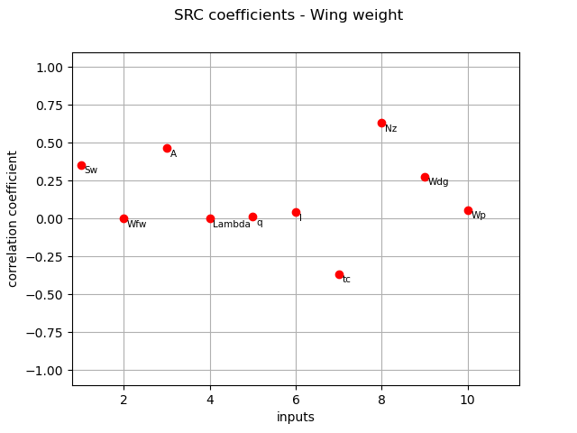
Normalized squared SRC coefficients (coefficients are made to sum to 1) :
squared_src_indices = corr_analysis.computeSquaredSRC(True)
print(squared_src_indices)
[0.119327,0.000121588,0.236833,1.60608e-06,0.000207717,0.00169402,0.134911,0.422061,0.0810197,0.00382282]#10
And their associated graph:
graph = ot.SobolIndicesAlgorithm.DrawCorrelationCoefficients(
squared_src_indices, inputNames, 'Squared SRC coefficients - Wing weight')
view = otv.View(graph)
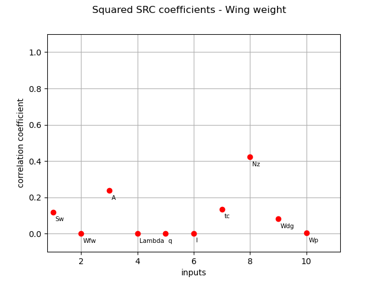
SRRC coefficients¶
We compute here SRRC coefficients using the CorrelationAnalysis.
srrc_indices = corr_analysis.computeSRRC()
print(srrc_indices)
[0.361267,0.0145646,0.501659,-0.00463828,0.0191614,0.0407509,-0.380531,0.683358,0.313877,0.0808765]#10
graph = ot.SobolIndicesAlgorithm.DrawCorrelationCoefficients(
srrc_indices, inputNames, 'SRRC coefficients - Wing weight')
view = otv.View(graph)
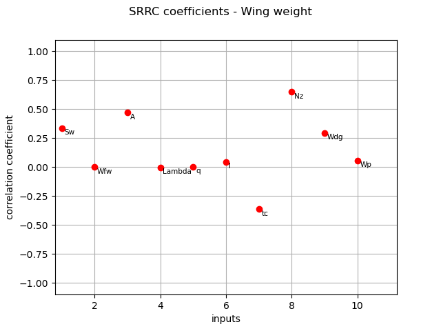
Pearson coefficients¶
We compute here the Pearson  coefficients using the
coefficients using the CorrelationAnalysis.
pearson_correlation = corr_analysis.computePearsonCorrelation()
print(pearson_correlation)
[0.235512,-0.0328824,0.419915,-0.0135446,-0.0692302,0.0434365,-0.379096,0.612647,0.335063,0.0419078]#10
title_pearson_graph = "Pearson correlation coefficients - Wing weight"
graph = ot.SobolIndicesAlgorithm.DrawCorrelationCoefficients(pearson_correlation,
inputNames,
title_pearson_graph)
view = otv.View(graph)
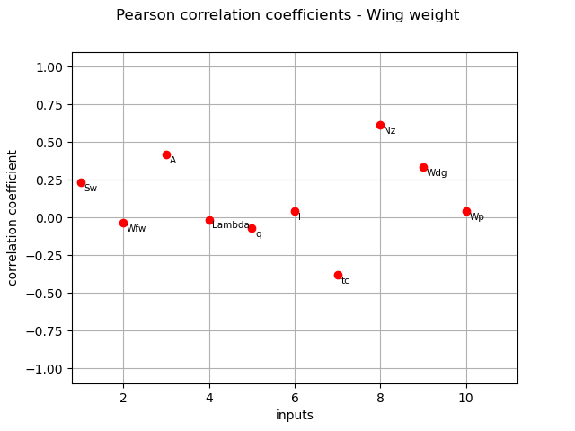
Spearman coefficients¶
We compute here the Spearman  coefficients using the
coefficients using the CorrelationAnalysis.
spearman_correlation = corr_analysis.computeSpearmanCorrelation()
print(spearman_correlation)
[0.226962,-0.0274201,0.40528,-0.0187471,-0.0642766,0.0358186,-0.366801,0.605454,0.344385,0.0551515]#10
title_spearman_graph = "Spearman correlation coefficients - Wing weight"
graph = ot.SobolIndicesAlgorithm.DrawCorrelationCoefficients(spearman_correlation,
inputNames,
title_spearman_graph)
view = otv.View(graph)
plt.show()
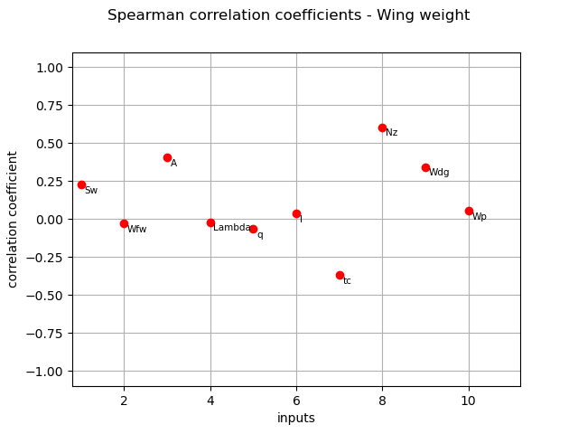
The different computed correlation estimators show that the variables seem to be the most correlated with the wing weight in absolute value. Pearson and Spearman coefficients do not reveal any linear nor monotonic correlation as no coefficients are equal to +/- 1. Coefficients about are negative revealing a negative correlation with the wing weight, that is consistent with the model expression.
Taylor expansion importance factors¶
We compute here the Taylor expansion importance factors using TaylorExpansionMoments.
We create a distribution-based RandomVector.
X = ot.RandomVector(m.distributionX)
We create a composite RandomVector Y from X and m.model.
Y = ot.CompositeRandomVector(m.model, X)
We create a Taylor expansion method to approximate moments.
taylor = ot.TaylorExpansionMoments(Y)
We get the importance factors.
print(taylor.getImportanceFactors())
[Sw : 0.130315, Wfw : 2.94004e-06, A : 0.228153, Lambda : 0, q : 8.25053e-05, l : 0.00180269, tc : 0.135002, Nz : 0.412794, Wdg : 0.0883317, Wp : 0.00351621]
We draw the importance factors
graph = taylor.drawImportanceFactors()
graph.setTitle('Taylor expansion imporfance factors - Wing weight')
view = otv.View(graph)
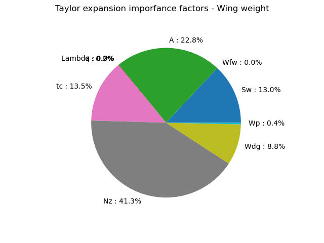
The Taylor expansion importance factors is consistent with the previous estimators as seem to be the most influent variables. To analyze the relevance of the previous indices, a Sobol’ analysis is now carried out.
Sobol’ indices¶
We compute the Sobol’ indices from both sampling approach and Polynomial Chaos Expansion.
sizeSobol = 1000
sie = ot.SobolIndicesExperiment(m.distributionX, sizeSobol)
inputDesignSobol = sie.generate()
inputNames = m.distributionX.getDescription()
inputDesignSobol.setDescription(inputNames)
inputDesignSobol.getSize()
12000
We see that 12000 function evaluations are required to estimate the first order and total Sobol’ indices.
Then, we evaluate the outputs corresponding to this design of experiments.
outputDesignSobol = m.model(inputDesignSobol)
We estimate the Sobol’ indices with the SaltelliSensitivityAlgorithm.
sensitivityAnalysis = ot.SaltelliSensitivityAlgorithm(
inputDesignSobol, outputDesignSobol, sizeSobol)
The getFirstOrderIndices and getTotalOrderIndices methods respectively return estimates of all first order and total Sobol’ indices.
print('First order indices:', sensitivityAnalysis.getFirstOrderIndices())
First order indices: [0.0895403,-0.0324985,0.224239,-0.0324775,-0.0326605,-0.0297425,0.111533,0.459428,0.0692415,-0.0257065]#10
print('Total order indices:',sensitivityAnalysis.getTotalOrderIndices())
Total order indices: [0.132254,1.75663e-05,0.25098,0.000159035,0.000417434,0.000214447,0.144213,0.410061,0.101327,0.00225025]#10
The draw method produces the following graph. The vertical bars represent the 95% confidence intervals of the estimates.
graph = sensitivityAnalysis.draw()
graph.setTitle('Sobol indices with Saltelli - wing weight')
view = otv.View(graph)
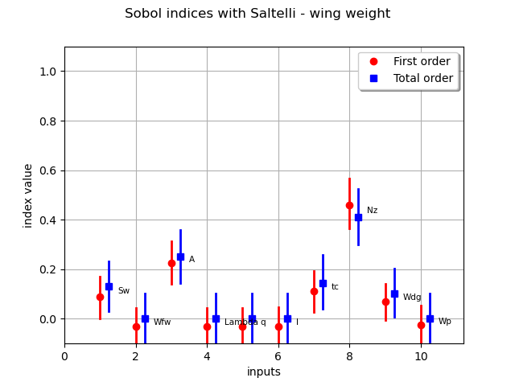
We see that several Sobol’ indices are negative, that is inconsistent with the theory. Therefore, a larger number of samples is required to get consistent indices
sizeSobol = 10000
sie = ot.SobolIndicesExperiment(m.distributionX, sizeSobol)
inputDesignSobol = sie.generate()
inputNames = m.distributionX.getDescription()
inputDesignSobol.setDescription(inputNames)
inputDesignSobol.getSize()
outputDesignSobol = m.model(inputDesignSobol)
sensitivityAnalysis = ot.SaltelliSensitivityAlgorithm(
inputDesignSobol, outputDesignSobol, sizeSobol)
sensitivityAnalysis.getFirstOrderIndices()
sensitivityAnalysis.getTotalOrderIndices()
graph = sensitivityAnalysis.draw()
graph.setTitle('Sobol indices with Saltelli - wing weight')
view = otv.View(graph)
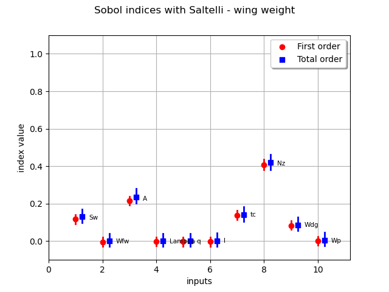
It improves the accuracy of the estimation but, for very low indices, Saltelli scheme is not accurate since several confidence intervals provide negative lower bounds.
Now, we estimate the Sobol’ indices using Polynomial Chaos Expansion. We first create a Functional Chaos Expansion.
sizePCE = 200
inputDesignPCE = m.distributionX.getSample(sizePCE)
outputDesignPCE = m.model(inputDesignPCE)
multivariateBasis = ot.OrthogonalProductPolynomialFactory(
[m.distributionX.getMarginal(i) for i in range(m.dim)])
selectionAlgorithm = ot.LeastSquaresMetaModelSelectionFactory()
projectionStrategy = ot.LeastSquaresStrategy(inputDesignPCE, outputDesignPCE, selectionAlgorithm)
totalDegree = 4
enumfunc = multivariateBasis.getEnumerateFunction()
P = enumfunc.getStrataCumulatedCardinal(totalDegree)
adaptiveStrategy = ot.FixedStrategy(multivariateBasis, P)
algo = ot.FunctionalChaosAlgorithm(
inputDesignPCE, outputDesignPCE, m.distributionX, adaptiveStrategy, projectionStrategy)
algo.run()
result = algo.getResult()
print(result.getResiduals())
print(result.getRelativeErrors())
[0.00955479]
[1.07233e-06]
The relative errors are very low: this indicates that the PCE model has good accuracy.
Then, we exploit the surrogate model to compute the Sobol’ indices.
sensitivityAnalysis = ot.FunctionalChaosSobolIndices(result)
print(sensitivityAnalysis.summary())
firstOrder = [sensitivityAnalysis.getSobolIndex(i) for i in range(m.dim)]
totalOrder = [sensitivityAnalysis.getSobolTotalIndex(
i) for i in range(m.dim)]
graph = ot.SobolIndicesAlgorithm.DrawSobolIndices(
inputNames, firstOrder, totalOrder)
graph.setTitle('Sobol indices by Polynomial Chaos Expansion - wing weight')
view = otv.View(graph)
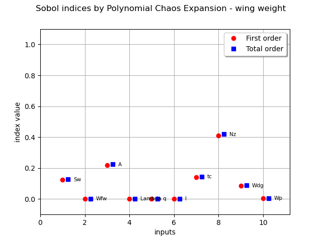
input dimension: 10
output dimension: 1
basis size: 105
mean: [268.111]
std-dev: [48.101]
------------------------------------------------------------
Index | Multi-indice | Part of variance
------------------------------------------------------------
6 | [0,0,0,0,0,0,0,1,0,0] | 0.410796
2 | [0,0,1,0,0,0,0,0,0,0] | 0.220073
5 | [0,0,0,0,0,0,1,0,0,0] | 0.139081
1 | [1,0,0,0,0,0,0,0,0,0] | 0.124534
7 | [0,0,0,0,0,0,0,0,1,0] | 0.0844863
------------------------------------------------------------
------------------------------------------------------------
Component | Sobol index | Sobol total index
------------------------------------------------------------
0 | 0.12455 | 0.127885
1 | 0 | 5.11089e-06
2 | 0.220194 | 0.225845
3 | 0.000545033 | 0.000563498
4 | 6.52128e-05 | 8.87667e-05
5 | 0.00172527 | 0.00177244
6 | 0.141499 | 0.14544
7 | 0.412025 | 0.419721
8 | 0.0845279 | 0.08702
9 | 0.00329707 | 0.00334609
------------------------------------------------------------
The Sobol’ indices confirm the previous analyses, in terms of ranking of the most influent variables. We also see that five variables have a quasi null total Sobol’ indices, that indicates almost no influence on the wing weight. There is no discrepancy between first order and total Sobol’ indices, that indicates no or very low interaction between the variables in the variance of the output.
HSIC indices¶
We then estimate the HSIC indices using a data-driven approach by exploiting the design of experiments used to train the PCE model.
inputDesignHSIC = inputDesignPCE
outputDesignHSIC = outputDesignPCE
covarianceModelCollection = []
for i in range(m.dim):
Xi = inputDesignHSIC.getMarginal(i)
inputCovariance = ot.SquaredExponential(1)
inputCovariance.setScale(Xi.computeStandardDeviation())
covarianceModelCollection.append(inputCovariance)
We define a covariance kernel associated to the output variable.
outputCovariance = ot.SquaredExponential(1)
outputCovariance.setScale(outputDesignHSIC.computeStandardDeviation())
covarianceModelCollection.append(outputCovariance)
In this paragraph, we perform the analysis on the raw data: that is the global HSIC estimator.
estimatorType = ot.HSICUStat()
We now build the HSIC estimator:
globHSIC = ot.HSICEstimatorGlobalSensitivity(
covarianceModelCollection, inputDesignHSIC, outputDesignHSIC, estimatorType)
We get the R2-HSIC indices:
R2HSICIndices = globHSIC.getR2HSICIndices()
print("\n Global HSIC analysis")
print("R2-HSIC Indices: ", R2HSICIndices)
Global HSIC analysis
R2-HSIC Indices: [0.0577484,-0.00373071,0.106967,0.00581159,-0.00530909,0.00704091,0.0595426,0.293652,0.0924003,-0.000969001]#10
and the HSIC indices:
HSICIndices = globHSIC.getHSICIndices()
print("HSIC Indices: ", HSICIndices)
HSIC Indices: [0.00508928,-0.000316705,0.0089892,0.000494318,-0.00045258,0.000609337,0.00510215,0.0252512,0.00787126,-8.01297e-05]#10
The p-value by permutation.
pvperm = globHSIC.getPValuesPermutation()
print("p-value (permutation): ", pvperm)
p-value (permutation): [0,0.643564,0,0.188119,0.712871,0.168317,0,0,0,0.445545]#10
We have an asymptotic estimate of the value for this estimator.
pvas = globHSIC.getPValuesAsymptotic()
print("p-value (asymptotic): ", pvas)
p-value (asymptotic): [9.37986e-06,0.654557,4.23007e-10,0.180937,0.755991,0.140928,9.18252e-06,8.64633e-23,2.26231e-08,0.473288]#10
We vizualise the results.
graph1 = globHSIC.drawHSICIndices()
view1 = otv.View(graph1)
graph2 = globHSIC.drawPValuesAsymptotic()
view2 = otv.View(graph2)
graph3 = globHSIC.drawR2HSICIndices()
view3 = otv.View(graph3)
graph4 = globHSIC.drawPValuesPermutation()
view4 = otv.View(graph4)
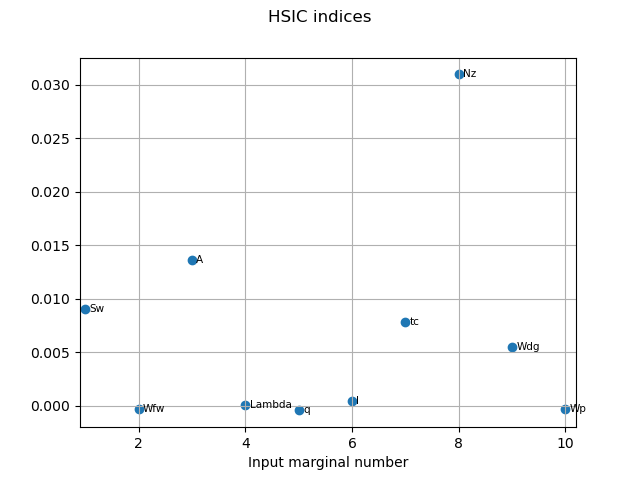
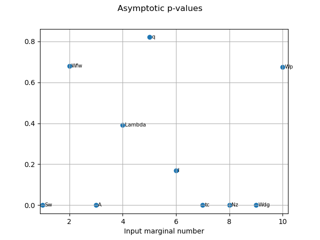
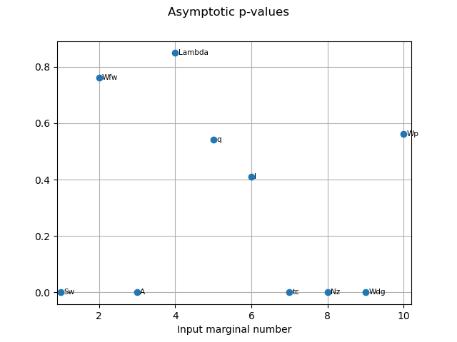
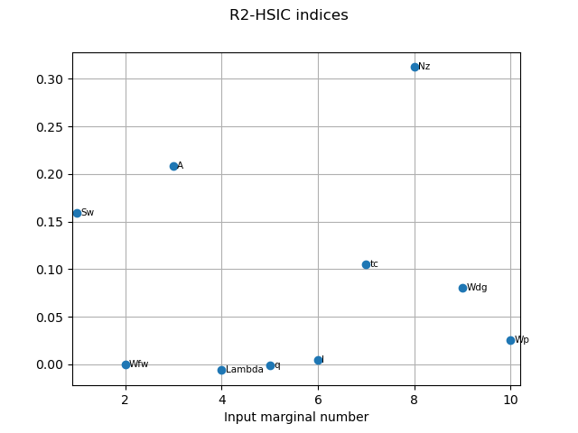
The HSIC indices go in the same way as the other estimators in terms the most influent variables. The variables seem to be independent to the output as the corresponding p-values are high. We can also see that the asymptotic p-values and p-values estimated by permutation are quite similar.
Total running time of the script: ( 0 minutes 12.034 seconds)